Flashcapture
This app and your iPhone Shortcuts. Sends your voice, photos and place. Offline captures wait on the device until you're back.
Here: the Capture tab.
Drag the handles to keep part of the recording.
Nothing yet. Record your day.

A Flash captures the moment, the Prism splits it into its colors, each day becomes a Frame, the Spectrum lays everything out in order, and the Lens lets you zoom into any day.
This app and your iPhone Shortcuts. Sends your voice, photos and place. Offline captures wait on the device until you're back.
Here: the Capture tab.
Turns a recording into a transcript, then facts, mood and a journal entry. The audio and raw transcript are always kept.
Here: “Writing journal…” → “In journal” in History.
One Markdown file per day in Google Drive, readable in Obsidian. The source of truth; your own edits are never overwritten.
Here: “This week” counts them.
Watches the Frames and builds a search index by meaning and date. It can always be rebuilt from the Frames.
Runs on the server.
The connector Claude and ChatGPT use to search your days. Answers come only from your entries, with dates.
In Claude or ChatGPT.
Saved only on this device.
Apps that can search your journal through the Lens. Disconnecting cuts an app off at once; it needs the Lens password to connect again.
No AI app has connected yet.